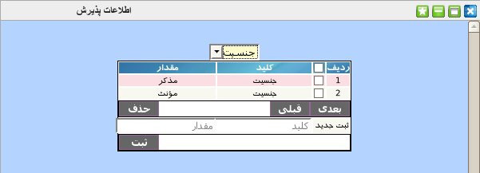

۱-اطلاعات پذیرش
پنل اطلاعات پذیرش یکی از پنل های مدیریتی است که اطلاعات پایه پذیرش در آن تعریف می شود. منوی کشویی بالای جدول شامل چهار سطح جنسیت, شهر, ملیت و نسبت می باشد. در فرم پذیرش میهمان برای هر سطح باید مواردی پر شود. مثلا برای جنسیت, مذکر یا مونث بودن و برای شهر, نام شهر و برای ملیت, ایرانی یا غیر ایرانی بودن و برای نسبت, نسبت های پدر, مادر و .... این امکان برای کاربر ارشد بوجود آمده است که براساس نیاز موجود در مجموعه این موارد را تعریف کند.

برای ثبت مقادیر برای هر سطح ابتدا از منوی کشویی بالای جدول سطح مورد نظر را انتخاب کرده و در پنل پایین جدول ابتدا عنوان سطح مورد نظر را در ستون کلید سپس مقدار مورد نظر را در ستون مقدار وارد نمایید و در انتها بر روی دکمه ثبت کلیک نمایید. لازم به ذکر است که اگر عنوان انتخابی در ستون کلید با عنوان سطح انتخاب شده متفاوت باشد ثبت انجام نمی شود.
جهت ویرایش مقادیر هر آیتم بر روی آن کلیک نمایید و پس از تصحیح کلید Enter را بزنید.
جهت حذف تکی هر آیتم, موس خود را بر روی شماره ردیف آیتم برده و بر روی لینک حذف کلیک نمایید.
جهت حذف گروهی آیتم ها, آیتم های مورد نظر را انتخاب و بر روی دکمه حذف کلیک نمایید.